Future Plans
For the most part I have just focused on myself and making sure I was successful in my schoolwork and classes. However, I definitely have plans to volunteer in the future. At this point in my life I am focused on developing and gaining more knowledge so I can be the best version of myself. Below I talk more about a nonprofit organization that is doing amazing work.

Literacy Advance is a non-profit organization that strives to help improve the lives of others by teaching them how to be literate in the real world. For example, they teach classes that show you how to apply for jobs on the computer or how to read a menu and order at a restaurant. Things like this allow them to be successful in the real world. Before the pandemic started, I had begun the process of training for Literacy Advance. It was very enjoyable experience and something I was looking forward to doing over the summer. I couldn't because of the quarantine, but I hope after I graduate I will have time to go back and volunteer in person.